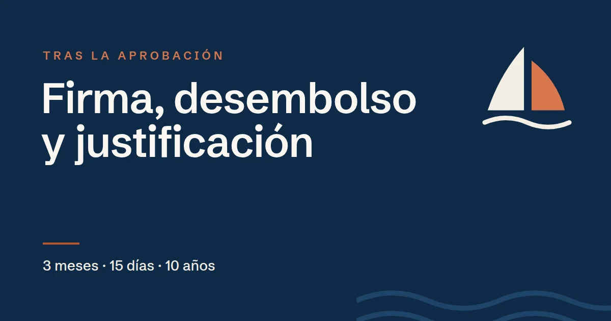

Me han aprobado ICO Crecimiento: firma, desembolso y justificación

En resumen
La aprobación no es el final. Después vienen estos pasos:
- Aceptar las condiciones de la resolución de concesión.
- Firmar el contrato en documento público en un máximo de 3 meses (prorrogables otros 3).
- Recibir el dinero: el circulante, de una vez en 15 días; la inversión, en una o varias entregas antes de que acabe la carencia.
- Justificar el destino de los fondos con facturas en ICO Online.
- Conservar la documentación durante 10 años desde el vencimiento.
Basado en el Documento de Condiciones Generales (DCG) de la línea ICO Crecimiento. Las condiciones pueden cambiar y, en caso de duda, prevalece el texto oficial: compruébalo siempre en www.ico.es.
1. La resolución de concesión
El Comité de Operaciones del ICO aprueba la operación con una resolución que fija exactamente las condiciones: importe, plazo, carencia, tipo y garantías. La empresa tiene que aceptarlas expresamente y, a partir de ahí, ya no se pueden cambiar en la firma, salvo en los casos previstos en el reglamento.
2. La firma del contrato
El contrato de préstamo se formaliza en documento público, ante notario. La resolución indica el plazo máximo para firmarlo, que no puede superar 3 meses, con una única prórroga de otros 3 si se justifica. En la fecha de firma, la empresa no puede figurar como morosa en la CIRBE.
Si la operación lleva aval de una SGR u otras garantías, tienen que estar listas para la firma.
3. El desembolso
- Circulante
- De una sola vez, en un máximo de 15 días naturales desde la firma
- Inversión
- En una o varias entregas, siempre antes de que termine la carencia
- Comisión de apertura
- El 0,5 % se descuenta del primer desembolso
- Lo no dispuesto
- Si no se dispone todo en plazo, el préstamo queda en lo dispuesto, sin comisión por el resto
4. La justificación
La empresa tiene que justificar en qué ha gastado el dinero. Se hace en la aplicación de ICO Online, subiendo copia de las facturas, que deben cumplir el reglamento de facturación, y certificando con firma electrónica que son copia fiel de los originales. En la compra de participaciones se justifica con una nota simple del Registro Mercantil o un certificado de la sociedad, y en la compra de inmuebles hace falta un certificado de tasación.
No justificar, o justificar de forma insuficiente, puede provocar el vencimiento anticipado del préstamo o que no se hagan los desembolsos pendientes. Conviene tener las facturas y los justificantes de pago ordenados desde el principio.
5. Durante la vida del préstamo
- Pagos mensuales: intereses el día 15 de cada mes y, pasada la carencia, el capital en cuotas constantes.
- Revisión del tipo una vez al año, con aviso previo.
- Controles: el ICO, la Intervención General del Estado y el Tribunal de Cuentas pueden pedir información y visitar las instalaciones.
- Plan de Remediación, si la puntuación de sostenibilidad fue inferior a 2: hay 24 meses para acreditar mejoras.
- Desarrollar el proyecto según el plan presentado y comunicar cualquier cambio relevante.
- Conservar los documentos justificativos durante 10 años desde el vencimiento del préstamo.
¿Se pueden cambiar las condiciones después?
En algunos casos, sí: cambios de titularidad, fusiones o escisiones (si el nuevo titular cumple los requisitos), una ampliación del plazo por circunstancias imprevisibles o una ampliación del plazo de disposición. Nunca se puede aumentar el importe aprobado, y la mala situación económica de la empresa no justifica por sí sola alargar el plazo.
También se puede cancelar el préstamo antes de tiempo, total o parcialmente, con una comisión del 0,5 % sobre lo devuelto.
Causas de vencimiento anticipado
- Dejar de pagar seis liquidaciones consecutivas.
- Haber obtenido el préstamo falseando u ocultando condiciones.
- No cumplir el objetivo o el proyecto financiado.
- No justificar, o justificar de forma insuficiente, el destino de los fondos.
- Obstaculizar los controles.
Preguntas frecuentes
¿Cuánto tiempo hay para firmar ICO Crecimiento tras la aprobación?
El plazo lo fija la resolución de concesión y no puede superar 3 meses, con una única prórroga de otros 3 meses si se justifica. El contrato se firma en documento público.
¿Cuándo se recibe el dinero de ICO Crecimiento?
En circulante, de una sola vez en un máximo de 15 días naturales desde la firma. En inversión, en una o varias entregas antes de que termine el periodo de carencia.
¿Cómo se justifica el préstamo de ICO Crecimiento?
Subiendo a ICO Online copia de las facturas del gasto, certificadas con firma electrónica. La compra de participaciones se justifica con nota simple o certificado de la sociedad. La documentación se conserva 10 años desde el vencimiento.